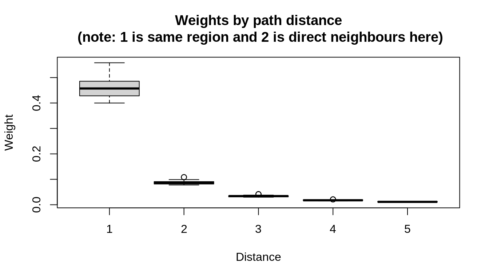

Tutorial, part 2 - Step-by-step development of multivariate hhh4 models
Author
Johannes Bracher
What’s the plan?
In this part of the tutorial you will learn how to build multivariate hhh4 models. We will proceed as follows:
I will talk you through an example analysis of norovirus in the twelve districts of Berlin, adding complexity to an hhh4 model step by step.
Then you will be able to use the code chunks from my example to analyse a data set on rotavirus in Berlin which has exactly the same structure as the norovirus data.
We’ll try to be available for questions while you are working on your analysis (as time and the number of participants permits).
If time permits we will go through some of your work at the end.
We are using these teaching materials for the first time, so they are likely to contain some errors and bugs – don’t hesitate to ask if something seems puzzling.
Repetition: Installing packages
We require the packages surveillance and hhh4addon, the latter containing some additional functionality for hhh4 models. It can be installed directly from GitHub using the remotes package (you may already have done that for the first part of the tutorial, but the necessary code is included here to make this document self-contained).
This is surveillance 1.20.0. For overview type 'help(surveillance)'.
# to install hhh4addon# install.packages("remotes")# library(remotes)# remotes:::install_github("jbracher/hhh4addon", build_vignettes = TRUE)library(hhh4addon)
Loading required package: polyCub
This is a development version of hhh4addon. It modifies and extends functionalities of surveillance:hhh4.
Attaching package: 'hhh4addon'
The following object is masked from 'package:surveillance':
decompose.hhh4
Example data
We will use two data sets provided with the hhh4addon package (original data from Robert Koch Institute). The noroBE data contain weekly counts confirmed of norovirus cases in the twelve districts of Berlin, 2011–2017. The rotaBE data contain the same for rotavirus. In this note the norovirus data are analysed, which as an exercise you will be able to apply to the rotavirus data.
# get the datadata("noroBE")# if you don't have the hhh4addon package installed you can use:# load(# url("https://github.com/cmmid/hhh4-workshop/blob/main/tutorial2_multivariate/data/noroBE.rda?raw=true")# )
We start by plotting the temporal and spatial distribution of the data:
# look at data:# time series:plot(noroBE, ylim =c(0, 40))
# map:# as population(noroBE) contains population fractions rather than raw# population sizes setting population = 100,000/<population of Berlin># will yield cumulative incidence per 100,000 inhabitants; see ?stsplot_spaceplot(noroBE, observed ~ unit, population =100000/3500000, labels =TRUE)
We moreover take a look at the slot neighbourhood of the sts object. In this case it contains path distances between the districts: e.g., chwi and frkr have a distance of 2 as you need to go through mitt or scho.
# check the neighbourhood structure, which is stored in the @neighbourhood slot # of the sts object:noroBE@neighbourhood
Step 1: Seasonality in the endemic component, all parameters shared.
We start by formulating a very simple model where for districts \(i = 1, \dots, K\) we assume \[\begin{align}
Y_{it} \ \mid \ \ \text{past} & \sim \text{NegBin}(\mu_{it}, \psi)\\
\mu_{it} & = \nu_t + \lambda Y_{i, t - 1}
\end{align}\] and
\(\lambda Y_{i, t - 1}\) as the autoregressive or epidemic component
In a setting with just three districts the model could be illustrated as follows – case numbers the different districts are independent and only depend on the previous value in the same district.
In surveillance this model is specified as follows. Reminder: The hhh4 function takes the following arguments:
an stsobject containing the data
a control argument describing the model formulation. This list contains a number of named arguments, the most important ones being:
end: a specification of the endemic component (i.e., \(\nu\)).
ar: a specification of the autoregressive component (\(\lambda\); dependence on the previous value from the same district).
ne: a specification of the neighbourhood component (\(\phi\); dependence on on previous value from other districts, to be introduced later). All of end, ar and ne are lists containing a formula and possibly some more elements, see ?hhh4
family: the type of distribution used in the recursive model formulation (either "Poisson", "NegBin1", or "NegBinM").
subset: The subset of the time series to which the model shall be fit.
# first define a subset of the data to which to fit (will be used in all model# fits to ensure comparability of AIC values):subset_fit <-6:(nrow(noroBE@observed) -52)# we are leaving out the last year and the first 5 observations# the latter serves to ensure comparability to later model versions################################################################### Model 1:# control list:ctrl1 <-list(end =list(f =addSeason2formula(~1, S =1)), # seasonality in end# S = 1 means one pair of sine / cosine waves is includedar =list(f =~1), # no seasonality in arfamily ="NegBin1", # negative binomial (rather than Poisson)subset = subset_fit)# fit modelfit1 <-hhh4(noroBE, ctrl1)# summary of parameter estimates:summary(fit1)
Call:
hhh4(stsObj = noroBE, control = ctrl1)
Coefficients:
Estimate Std. Error
ar.1 -0.72854 0.03453
end.1 0.84477 0.02860
end.sin(2 * pi * t/52) 0.09024 0.02806
end.cos(2 * pi * t/52) 0.88574 0.02856
overdisp 0.22957 0.01076
Log-likelihood: -8780.82
AIC: 17571.64
BIC: 17602.7
Number of units: 12
Number of time points: 307
# you can set idx2Exp = TRUE to get all estimates on the exp-transformed scalesummary(fit1, idx2Exp =TRUE)
Call:
hhh4(stsObj = noroBE, control = ctrl1)
Coefficients:
Estimate Std. Error
exp(ar.1) 0.48261 0.01667
exp(end.1) 2.32745 0.06657
exp(end.sin(2 * pi * t/52)) 1.09443 0.03071
exp(end.cos(2 * pi * t/52)) 2.42477 0.06925
overdisp 0.22957 0.01076
Log-likelihood: -8780.82
AIC: 17571.64
BIC: 17602.7
Number of units: 12
Number of time points: 307
# get AIC to compare model fit to more complex modelsAIC(fit1)
[1] 17571.64
# visually inspect:par(mfcol =c(6, 2))plot(fit1, unit =1:12, par.settings =list(mfcol =c(6, 2))) # look at all units
# par.settings = list(mfcol = c(6, 2)) tells the function we want two columns# of plots
The grey area represents the endemic component (\(\nu_{t}\)) of the fitted values with clearly visible seasonality. The blue area represents the autoregressive component.
For model inspection I like looking at Pearson residuals
which are not currently implemented in surveillance, but can be computed using a little auxiliary function. For now I just look at their mean and variance per district.
# helper function to compute Pearson residuals:pearson_residuals <-function(hhh4Obj){# compute raw residuals: response_residuals <-residuals(hhh4Obj, type ="response")# compute standard deviations:if (inherits(hhh4Obj, "hhh4lag")) { sds <-sqrt(fitted(hhh4Obj) +fitted(hhh4Obj)^2/hhh4addon:::psi2size.hhh4lag(hhh4Obj)) } else { sds <-sqrt(fitted(hhh4Obj) +fitted(hhh4Obj)^2/surveillance:::psi2size.hhh4(hhh4Obj)) }# compute Pearson residuals: pearson_residuals <- response_residuals/sdsreturn(pearson_residuals)}pr1 <-pearson_residuals(fit1)# compute district-wise means and standard deviations:colMeans(pr1)
In each district, the Pearson residuals should have mean and standard deviations of approximately 0 and 1, respectively, which is clearly not the case. By sharing all parameters, fitted values are systematically larger than observed in some districts and smaller in others.
Adding district-specific parameters.
As the districts are of quite different sizes and have different levels of incidence, it seems reasonable to use district-specific parameters and extend the model to \[\begin{align}
Y_{it} \ \mid \ \ \text{past} & \sim \text{NegBin}(\mu_{it}, \psi)\\
\mu_{it} & = \nu_{it} + \lambda_i Y_{i, t - 1}\\
\nu_{it} & = \alpha^\nu_i + \beta^\nu \sin(2\pi t/52) + \gamma^\nu \cos(2\pi t/52)
\end{align}\]
################################################################### Model 2:# We use fe(..., unitSpecific = TRUE) to add fixed effects for each unit,# in this case intercepts (1). Seasonality parameters are still shared# across districtsctrl2 <-list(end =list(f =addSeason2formula(~0+fe(1, unitSpecific =TRUE),S =1)),ar =list(f =~0+fe(1, unitSpecific =TRUE)),family ="NegBin1",subset = subset_fit)# Note: ~0 is necessary as otherwise one would (implicitly) add two intercepts# unit-specific dispersion parameters could be added by setting family = "NegBinM"fit2 <-hhh4(noroBE, ctrl2)# check parameter estimates:summary(fit2)
Note that we could also add district-specific dispersion parameters \(\psi_i\) by setting family = "NegBinM", but for simplicity we stick with the shared overdispersion parameter.
Adding dependence between districts.
For now we have been modelling each district separately (while sharing some strength by pooling parameters). In a next step we add dependencies via the ne (neighbourhood) component. There are different ways of specifying the coupling between districts. The neighbourhood slot of the sts object contains the necessary information on the geographical disposition.
We now fit a model where only direct neighbours affect each other, setting \[\begin{align}
Y_{it} \ \mid \ \ \text{past} & \sim \text{NegBin}(\mu_{it}, \psi)\\
\mu_{it} & = \nu_{it} + \lambda_i Y_{i, t - 1} + \phi_i \sum_{j \sim i} w_{ji} Y_{j, t - 1}.
\end{align}\] Here, the relationship \(\sim\) indicates direct neighbourhood. The weights \(w_{ji}\) can be chosen in two ways.
if normalize == TRUE: \(w_{ji} = 1/\) number of neighbours of \(j\) if \(i \sim j\), 0 else
if normalize == FALSE: \(w_{ji} = 1\) if \(i \sim j\), 0 else
We usually use normalize = TRUE, which is based on the intuition that each district splits up its infectious pressure equally among its neighbours. Note that in this formulation, the autoregression on past incidence from the same district and others are handled each on their own with separate parameters.
In a simple graphical ilustration with just three districts where district 2 is neighbouring both 1 and 3, but 1 and 3 are not neighbours, the model looks as follows. The grey lines indicate that these dependencies are typically weaker than the ones to previous values from the same district.
# The default setting for the ne component is to use weights # neighbourhood(stsObj) == 1 (see ?hhh4).neighbourhood(noroBE) ==1
# this is because historically neighbourhood matrices were just binary# however, the path distances are coded in a way that direct neighbours have # distance 1, meaning that there is no need to modify the neighbourhood matrix################################################################### Model 3:ctrl3 <-list(end =list(f =addSeason2formula(~0+fe(1, unitSpecific =TRUE),S =1)),ar =list(f =~0+fe(1, unitSpecific =TRUE)),ne =list(f =~0+fe(1, unitSpecific =TRUE), normalize =TRUE), # now added ne component to reflect cross-district dependenciesfamily ="NegBin1",subset = subset_fit)# normalize = TRUE normalizes weights by the number of neighbours of the # exporting districtfit3 <-hhh4(noroBE, ctrl3)# alternative: use update# fit3 <- update(fit2, ne = list(f = ~ 0 + fe(1, unitSpecific = TRUE),# weights = neighbourhood(noroBE) == 1, # little bug?# normalize = TRUE))summary(fit3) # parameters for different districts are quite different
Plotting the model fits, we see that for certain districts the neighbourhood component (orange) is very important (chwi), for others negligible (trko). This may be due to poor identifiability (after all, the autoregressive terms from the same and other districts are strongly correlated).
plot(fit3, unit =1:12, par.settings =list(mfcol =c(6, 2)))
Adding a power law for spatial dependence.
The above formulation requires a lot of parameters as the autoregressions on the same and other regions are handled separately, and only takes into account first neighbours. A more parsimonious model also alowing for dependencies between indirect neighbours is a power-law formulation, where we set \[\begin{align}
\mu_{it} & = \nu_{it} + \phi_i \sum_{j = 1}^K w_{ji} Y_{j, t - 1}
\end{align}\] with weights \(w_{ji}\) defined as
where \(o_{ji}\) is the path distance between districts \(j\) and \(i\).
Returning to our simple illustration with three districts, this step adds some additional connections between indirect neighbours (districts 1 and 3). They are shown in light gray as by construction of the model they are weaker than those between neighbouring districts.
################################################################### Model 4# For the next model version we will formally incorporate the autoregressive# copoenent into the neighbourhood component# (i.e. do no longer treat autoregression on the same district separately). # This can be done as follows.# First we need to adapt the neighbourhood matrix, shifting by onenoroBE_power <- noroBEnoroBE_power@neighbourhood <- noroBE@neighbourhood +1# new control argument:ctrl4 <-list(end =list(f =addSeason2formula(~0+fe(1, unitSpecific =TRUE),S =1)),# note: line ar = ... is removedne =list(f =~0+fe(1, unitSpecific =TRUE),weights =W_powerlaw(maxlag=5, normalize =TRUE,log =TRUE)), # this is newfamily ="NegBin1",subset = subset_fit)# normalize = TRUE normalizes weights by the number of neighbours of the# exporting district# log = TRUE means optimization will be done on a log scale, ensuring # positivity of the decay parameter (which is desirable)fit4 <-hhh4(noroBE_power, ctrl4)AIC(fit4)
[1] 17233.06
This yields a quite drastic improvement in AIC. We can visualize the weights \(w_{ji}\) as a function of the path dependence \(o_{ji}\)
# visualize the nighbourhood weights:plot(fit4, type ="neweights", main ="Weights by path distance\n (note: 1 is same region and 2 is direct neighbours here)")

When plotting the model fit we note that there is now no autoregressive component (blue).
plot(fit4, unit =1:12, par.settings =list(mfcol =c(6, 2)))
# note there is now no autoregressive component in the fit plots
Adding seasonality to the epidemic component.
Including seasonality in the ar and ne components when both are present can lead to identifiability issues. In the more parsimonious model where only the ne component is present, however, including seasonal terms here can considerably improve the model fit. This is indeed the case in our example.
################################################################### Model 5:ctrl5 <-list(end =list(f =addSeason2formula(~0+fe(1, unitSpecific =TRUE),S =1)),# now adding seasonality to the ne component:ne =list(f =addSeason2formula(~0+fe(1, unitSpecific =TRUE),S =1),weights =W_powerlaw(maxlag=5, normalize =TRUE,log=TRUE)), # this is newfamily ="NegBin1",subset = subset_fit)fit5 <-hhh4(noroBE_power, ctrl5)AIC(fit5)
[1] 17205.41
We also consider the autocorrelation of the Pearson residuals. For several regions there are pronounced residual autocorrelations at lags 2 or 3, indicating that there is additional information to be exploited.
Lag weights are (usually) governed by a single parameter, which is fed into a function returning the weights. The package contains the several parameterizations:
Before entering into \(\eqref{eq:higher_order}\) the lag weights are standardized so they sum up to one, setting \(u_d = \tilde{u}_d / \sum_{i = 1}^D \tilde{u}_{i}\).
Returning a last time to our toy illustration of three districts, this step adds a whole lot of (typically week) connections between non-neighbouring time points.
# check out examples of the different lag types:# geometric:(g <-geometric_lag(par_lag =1.5, min_lag =1, max_lag =5))
# first weight corresponds to exp(1.5)/(1 + exp(1.5))# 5 is also the default number of lags# Poisson:(p <-poisson_lag(par_lag =0.8, min_lag =1, max_lag =5))
# weights correspond to dpois(0:4, exp(0.8))/sum(dpois(0:4, exp(0.8)))par(mfrow =1:2)plot(g, xlab ="lag", ylab ="weight", ylim =0:1, type ="h", main ="Geometric weights")plot(p, xlab ="lag", ylab ="weight", ylim =0:1, type ="h", main ="Poisson weights")
# A two-point distribution and a triangular distribution are also available.# Users can also provide their own weighting functions.
The parameterizations of these functions are chosen such that any value from the real line can be provided to them, which will facilitate optimization in a next step
The lag weihts can be pre-specified, but most of the time we will estimate them from the data rather than pre-specifying them. This can be done via the (poorly named) function profile_par_lag. We use geometric lags (which is also the default).
################################################################### Model 7ctrl7 <-list(end =list(f =addSeason2formula(~0+fe(1, unitSpecific =TRUE),S =1)),# note: line ar = ... is removedne =list(f =addSeason2formula(~0+fe(1, unitSpecific =TRUE),S =1),weights =W_powerlaw(maxlag=5, normalize =TRUE,log=TRUE)), # this is newfamily ="NegBin1",subset = subset_fit,# (no specification of par_lag in the control)funct_lag = geometric_lag)# now use profile_par_lag (applies a profile likelihood procedure to estimate# the lag decay parameter)fit7 <-profile_par_lag(noroBE_power, ctrl6)
Warning in profile_par_lag(noroBE_power, ctrl6): Your control list contains a
par_lag element. This is ignored by profile_par_lag. To fix par_lag rather than
estimating it from the data use the function hhh4lag.
AIC(fit7)
[1] 17138.12
We can plot the weights as estimated from the data:
# plot the weights assigned to the different lags:par(mfrow =1:2)plot(fit7$distr_lag, type ="h", xlab ="lag",ylab ="weight", ylim =0:1)
And consider the Pearson residuals, which look less problematic than before (at least that’s what I like to tell myself).
The packages contain functionality to imitate one-step-ahead (out-of-sample) forecasts retrospectively. To this end, the model is sequentially re-fitted, always including all data up to a given week. Then a one-week-ahead plug-in prediciton is obtained for the next week. We apply this to obtain predictions for weeks 313 through 364 which we had excluded from model fitting so far. Subsequently, you can use scores to evaluate the one-step-ahead predictions using several different statistical metrics. We compute the following:
the logarithmic score, also called negative predictive log-likelihood (informal explanation: this reflects how likely the observed outcomes were under your predictions)
the CRPS (informal explanation: this describes “how far” the observations were from the predictions you issued)
For both lower values` are better.
################################################################### one-step-ahead forecasting: generate forecasts sequentially# compare models 2, 4 and 7log2 <-capture.output(owa2 <-oneStepAhead(fit2, tp =c(312, 363)))log4 <-capture.output(owa4 <-oneStepAhead(fit4, tp =c(312, 363)))rm(log2, log4)# the weird capture.output formulation is needed to suppress # numerous cat() messages.# you could also just use# owa2 <- oneStepAhead(fit2, tp = c(312, 363))owa7 <-oneStepAhead_hhh4lag(fit7, tp =c(312, 363))
Lag weights are not re-estimated for the one-step-ahead forecasts (set refit_par_lag = TRUE to re-fit them).
# the return objects contain predictions, observations and a few other things:head(owa7$pred)
# plot one-step-ahead point forecasts:plot(noroBE@observed[313:364, 1], pch =20, xlab ="week", ylab ="value")lines(owa2$pred[, 1], type ="l", col =2)lines(owa4$pred[, 1], type ="l", col =4)lines(owa7$pred[, 1], type ="l", col =6)
# compute and summarize scores:colMeans(scores(owa2, which =c("logs", "rps")))
logs rps
2.506608 2.091024
colMeans(scores(owa4, which =c("logs", "rps")))
logs rps
2.492431 2.066390
colMeans(scores(owa7, which =c("logs", "rps")))
logs rps
2.475311 2.042008
We can see that the more complex model formulations also translate to improved predictive performance (all scores being negatively oriented; see ?scores).
Predictive moments at longer forecast horizons.
The hhh4addon package also contains functions to compute predictive moments (means, variances, autocorrelations) for longer time horizons as well as marginal/stationary moments of the fitted model.
################################################################### longer-term predictive moments can be computed using predictive_moments:# predictive moments 10 weeks ahead:pred_mom7 <-predictive_moments(fit7, t_condition =max(subset_fit), lgt =10)# print some predictive means:head(pred_mom7$mu_matrix[, 1:6])
# note: the plot is based on a negative binomial approximation of the # predictive distributions.# stationary/marginal moments are implemented, too (but don't always exist):stat7 <-stationary_moments(fit6)fanplot_stationary(stat7, unit =4)
Over to you…
You are now invited to perform an analysis of rotavirus in Berlin along the lines of the above. The data, which are structured the same way as the norovirus data. Your “goal” is to formulate a model which will generate good one-step-ahead forecasts (we’ll use logS as the main outcome, which is the so-called logarithmic score, equivalent to the negative predictive log-likelihood). You can load the data via
data("rotaBE")# if you don't have the hhh4addon package installed you can use:# load(# url("https://github.com/cmmid/hhh4-workshop/blob/main/tutorial2_multivariate/data/rotaBE.rda?raw=true")# )
Your code should look somewhat like the following:
Look at the data to get an idea of what it looks like.
Formulate and refine a control argument. To imitate a forecasting setting it makes sense to only use observations up to week 312 here (though you’re free to play around with whatever subsets of the data you like).
# owa <- oneStepAhead(your_fit, tp = c(312, 363))# or: owa <- oneStepAhead_hhh4(your_fit, tp = c(312, 363))# if you have used profile_par_lag # colMeans(scores(owa), which = c("logs", "rps"))# logs rps# 1.931189 1.639351
If you like you can post your results here (https://github.com/cmmid/hhh4-workshop/issues/1) or on the chat.
Here are some model aspects you can play around with:
Higher-order seasonal terms (as in a Fourier series) can be included by setting S = 2 or higher in the addSeason2formula function.
Linear time trends can be included by adding + t to a formula, e.g. f = addSeason2formula($\sim$ 0 + t + fe(1, unitSpecific = TRUE), S = 1)
Rotavirus transmission is known to be linked to temperature (https://doi.org/10.1098/rspb.2009.1755). We therefore uploaded a time series of weekly mean temperature values in Berlin (average of daily temperatures at 2pm, lagged by one week) to the GitHub repo of the workshop. These (or a transformation) can be used a a covariate.
# get temperature data:data_temperature <-read.csv(paste0("https://raw.githubusercontent.com/cmmid/hhh4-workshop/", "main/tutorial2_multivariate/data/temperature_berlin.csv"))temperature <- data_temperature$temperature7d# your formula could look as follows:ctrl <-list(end =list(f =addSeason2formula(~0+fe(1, unitSpecific =TRUE),S =1)),ar =list(f =~0+ temperature +fe(1, unitSpecific =TRUE)),family ="NegBin1",subset =6:312)# though that is not necessarily a very smart way of using the covariate